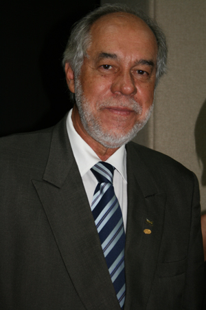

Em 2004, o Portal passa a contar com cerca de 8.500 periódicos em texto completo e 90 bases referenciais, mais do que o dobro de títulos disponíveis no ano anterior. O número de instituições participantes do Portal já chega a 133. Nesse ano, o Professor Jorge Almeida Guimarães assume a Presidência da CAPES.

Prof. Dr. Jorge Almeida Guimarães, atual presidente da CAPES
Ainda em 2004, é desenvolvido um novo layout para a página do Portal de Periódicos, que passa a contar com um espaço para as notícias de interesse da comunidade acadêmica. Essa foi a última reforma realizada na página do Portal antes do lançamento da versão atual.
Último layout do Portal de Periódicos antes da introdução da página atual
Em 2005, novos títulos foram assinados pela CAPES. O Portal de Periódicos passou a contar com um acervo de mais de 9.500 revistas científicas internacionais e 105 bases referenciais. Nessa época, houve esforço no desenvolvimento da coleção nas áreas de Ciências Sociais Aplicadas e Ciências Humanas de modo que o Portal de Periódicos atendesse melhor as demandas dos professores e alunos dessas disciplinas.
Outra novidade foi a inclusão de periódicos nacionais classificados pelo programa Qualis da CAPES, nos níveis A e B, com o objetivo de dar maior visibilidade à produção científica nacional. Foram mais de 300 títulos adicionados à coleção do Portal de Periódicos que, somados às revistas indexadas na base de dados Scielo, passou a contar com 516 periódicos publicados no Brasil.
Esse foi também o ano em que o Portal comemorou seu V Aniversário, com uma solenidade realizada no Hotel Nacional, em Brasília. O evento contou com a participação de várias autoridades, como o Ministro da Educação, Fernando Haddad, o Ministro de Ciência Tecnologia, Sérgio Resende, o Ministro da Saúde, Humberto Costa, o Diretor de Programas do Conselho Nacional de Desenvolvimento Científico e Tecnológico (CNPq), Manoel Barral Neto, além de representantes das universidades e das editoras parceiras do Portal de Periódicos.
Solenidade de Comemoração do V Aniversário do Portal de Periódicos da CAPES
Nesse mesmo ano, foi realizada a Conferência Internacional sobre Acesso à Informação Científica e Tecnológica promovida pela CAPES, em Brasília, em 1º de dezembro. No evento, houve uma manifestação geral dos participantes sobre a importância do programa e suas contribuições para o desenvolvimento do ensino e da pesquisa científica no Brasil.
Acervo em 2004
Bases Referenciais: ABI Inform Global; Abstracts in New Technologies and Engineering (Ante); Advanced Polymers Abstracts; Aerospace & High Technology Database; AGRICOLA; Aluminium Industry Abstracts; Applied Science Full Text; Applied Social Sciences Index and Abstracts (Assia); Aquatic Sciences and Fisheries Abstracts (ASFA); Art Full Text; Art Museum Image Gallery; Biological Abstracts; Biological and Agricultural Index Plus; BioOne Abstracts and Indexes; Business Full Text; CAB Abstracts; Cambridge Scientific Abstracts (CSA); Ceramic Abstracts/World Ceramics Abstracts; Classical Review; COMPENDEX EI Engineering Index; Composites Industry Abstracts; Computer and Information Systems Abstracts; Copper Data Center Database; Corrosion Abstracts; CrossRef Search; CSA Engineering Research Database; CSA High Technology Research Database with Aerospace; CSA Materials Research Database with METADEX; CSA Technology Research Database; CSA/ASCE - Civil Engineering Abstracts; Derwent Innovations Índex (DII); Earthquake Engineering Abstracts; ECOLOC: Gérer l''Économie Localement en Afrique; Econlit; Education Full Text; Educational Resources Information Center (Eric); Electronics and Communications Abstracts; Energy; Engineered Materials Abstracts; Engineered Materials Abstracts, Ceramics; Environmental Engineering Abstracts; Food Science and Technology Abstracts (FSTA); Fuel and Energy Abstracts; Future Trends; General Science Full Text; Georef; GeoRef Preview Database; Guide to Computing Literature; Handbook of Latin American Studies: HLAS Online; Humanities Full Text; IEA Databases; Implementing the OECD Anti-Bribery Convention; InfoTrac OneFile; INSPEC: The database for Physics; Jahrbuch über die Fortschritte der Mathematik; Library and Information Science Abstracts (Lisa); Library Literature and Information Science Full Text; Literatura Latino-Americana e do Caribe em Ciências da Saúde (Lilacs); Materials Business File; MathSci; Mechanical & Transportation Engineering Abstracts; MEDLINE/PubMed via Ovid, Bireme ou NLM; METADEX; MicroPatent Materials Patents; MLA International Bibliography; Model Tax Convention on Income and on Capital; NAL Catalog: AGRICOLA; NASA Astrophysics Data System (ADS): The Digital Library for Physics, Astrophysics and Instrumentation; National Criminal Justice Reference Service Abstracts (NCJRS); Oceanic Abstracts; OECD Databases; OECD Databases. Statistical Compendium; OECD Guidelines for the Testing of Chemicals; Philosopher''s Index; Polymer Contents; PsycARTICLES - OVID; PsycINFO (CSA); Publishers Weekly; Reference Reviews; Sage Race Relations Abstracts; Scirus: For Scienctific Information Only; Sixteenth Century Journal; Social Sciences Full Text; Social Services Abstracts; Sociological Abstracts; Solid State and Superconductivity Abstracts; SourceOECD Statistics; Utopian Studies; Virtual Journal of Applications of Superconductivity: A Multijournal Compilation in Superconducting Electronics, Materials and Large-Scale Systems; Virtual Journal of Biological Physics Research: A Multijournal Compilation of the Latest Research on Biological Physics; Virtual Journal of Nanoscale Science and Technology: A Weekly Multijournal Compilation of the Latest Research on Nanoscale Systems; Virtual Journal of Quantum Information: A Multijournal Compilation of the Latest Research in Quantum Computing, Cryptography and Communication; Virtual Journal of Ultrafast Science: A Multijournal Compilation of the Latest Research on Ultrafast Phenomena in Physics, Optics, Chemistry and Biology; Web Of Science (WoS); WELDASEARCH; Zentralblatt für Mathematik und ihre Grenzgebiete = Mathematics Abstracts; Zentralblatt MATH.
Acervo em 2005
Bases Referenciais: ABI Inform Global; Abstracts in New Technologies and Engineering (Ante); Advanced Polymers Abstracts; Aerospace & High Technology Database; Agri2000; AGRIS/CARIS; AGROBASE; Aluminium Industry Abstracts; Applied Science Full Text; Applied Social Sciences Index and Abstracts (Assia); Aquatic Sciences and Fisheries Abstracts (ASFA); Art Full Text; Art Museum Image Gallery; Bases de Dados da Pesquisa Agropecuária Embrapa (BDPA); Biological Abstracts; Biological and Agricultural Index Plus; BioOne Abstracts and Indexes; Business Full Text; CAB Abstracts; Cambridge Scientific Abstracts (CSA); CAplus; CAS React; Ceramic Abstracts/World Ceramics Abstracts; Chem Lists; ChemCATS; Citas Latinoamericanas en Ciencias Sociales y Humanidades (Clase); Classical Review; COMPENDEX EI Engineering Index; Composites Industry Abstracts; Computer and Information Systems Abstracts; Copper Data Center Database; Corrosion Abstracts; CrossRef Search; CSA Engineering Research Database; CSA High Technology Research Database with Aerospace; CSA Materials Research Database with METADEX; CSA Technology Research Database; CSA/ASCE - Civil Engineering Abstracts; Derwent Innovations Index (DII); Earthquake Engineering Abstracts; ECOLOC: Gérer l''Économie Localement en Afrique; Econlit; Education Full Text; Educational Resources Information Center (Eric); Electronics and Communications Abstracts; Energy; Engineered Materials Abstracts; Engineered Materials Abstracts, Ceramics; Environmental Engineering Abstracts; Food Science and Technology Abstracts (FSTA); Fuel and Energy Abstracts; Future Trends; General Science Full Text; GeoRef; GeoRef Preview Database; Guide to Computing Literature; Handbook of Latin American Studies: HLAS Online; History: Review of New Books; Humanities Full Text; IEA Databases; Implementing the OECD Anti-Bribery Convention; InfoTrac OneFile; INSPEC: The database for Physics; International Nuclear Information System (Inis); Jahrbuch über die Fortschritte der Mathematik; Kirkus Reviews; Latin American Periodicals Tables of Contents (Laptoc); Latindex: Sistema Regional de Información en Línea para Revistas Científicas de América Latina, el Caribe, España y Portugal; Library and Information Science Abstracts (Lisa); Library Literature and Information Science Full Text; Literatura Latino-Americana e do Caribe em Ciências da Saúde (Lilacs); Materials Business File; Materials in Surface Science Spectra: A Refereed Spectrum Reference and Database; MathSci; Mechanical & Transportation Engineering Abstracts; MEDLINE/PubMed via Ovid, Bireme ou NLM (acesso livre); METADEX; Micromedex; MicroPatent Materials Patents; MLA International Bibliography; Model Tax Convention on Income and on Capital; NAL Catalog: AGRICOLA; NASA Astrophysics Data System (ADS): The Digital Library for Physics, Astrophysics and Instrumentation; National Criminal Justice Reference Service Abstracts (NCJRS); Oceanic Abstracts; OECD Databases; OECD Databases. Statistical Compendium; OECD Guidelines for the Testing of Chemicals; Philosopher''s Index; Polymer Contents; PsycARTICLES - OVID; PsycINFO; Publishers Weekly; Reference Reviews; Registry; Sage Race Relations Abstracts; Scirus: For Scienctific Information Only; Sixteenth Century Journal; Social Sciences Full Text; Social Services Abstracts; Sociological Abstracts; Solid State and Superconductivity Abstracts; SourceOECD Statistics; Sport Discus; Utopian Studies; Virtual Journal of Applications of Superconductivity: A Multijournal Compilation in Superconducting Electronics, Materials and Large-Scale Systems; Virtual Journal of Biological Physics Research: A Multijournal Compilation of the Latest Research on Biological Physics; Virtual Journal of Nanoscale Science and Technology: A Weekly Multijournal Compilation of the Latest Research on Nanoscale Systems; Virtual Journal of Quantum Information: A Multijournal Compilation of the Latest Research in Quantum Computing, Cryptography and Communication; Virtual Journal of Ultrafast Science: A Multijournal Compilation of the Latest Research on Ultrafast Phenomena in Physics, Optics, Chemistry and Biology; Web Of Science (WoS); WELDASEARCH; Zentralblatt für Mathematik und ihre Grenzgebiete = Mathematics Abstracts; Zentralblatt MATH.